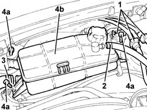
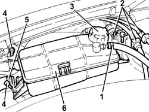
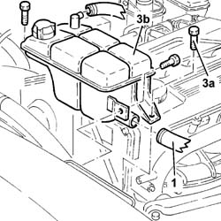
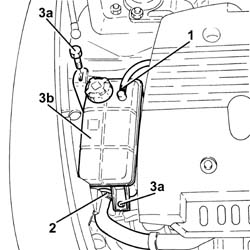

1088B10 engine cooling tank - r + r
- Path
- Procedures > 10 ENGINE > 1088 ENGINE COOLING > 1088B ENGINE COOLING RADIATOR > 1088B10 engine cooling tank - r + r
- Kind
- repair procedure (removal / refitting; the operation number is the code)
- Applies to
- all engines; all production periods
- Interactive page
- https://sloeber94.github.io/elrnDB-a147/en/#/3024902
Applies to: engines: 1.6 TS; all production periods
 Removing
Removing
 Refitting
Refitting1. Release the fuel vapour recovery pipes from the fastenings and move them to the side.
Draw off coolant from the engine coolant tank using a suitable syringe.
2. Disconnect the return pipe to the engine coolant supply reservoir, reservoir side.
3. Disconnect the system supply pipe, reservoir side.
4. Undo the bolts (4a) and remove the engine coolant supply reservoir (4b).

Applies to: engines: 1.6 TS; all production periods
Refitting
RemovingRefit the coolant reservoir in its seating and secure with its bolt.
Connect the system supply pipe, reservoir side.
Connect the return pipe to the engine coolant supply reservoir, reservoir side.
Place the fuel vapour recovery pipes back in their housings on the fastenings.
Refill the engine cooling system 0010T20 coolant change .
Applies to: engines: 2.0 TS; all production periods
Removing
Refitting1. Release the fuel vapour recovery pipes from the fastenings and move them aside.
Draw off coolant from the engine coolant tank using a suitable syringe.
2. Disconenct the return pipe to the engine coolant supply reservoir, reservoir side.
3. Disconnect the system supply pipe, reservoir side.
4. Undo the bolts (4a) and remove the engine coolant supply reservoir (4b).
Applies to: engines: 2.0 TS; all production periods
Refitting
RemovingRefit the coolant reservoir in its seating and secure with its bolt.
Connect the system supply pipe, reservoir side.
Connect the return pipe to the engine cooling system reservoir, reservoir side.
Place the fuel vapour recovery pipes back in their housings on the fastenings.
Refill the engine cooling system 0010T20 coolant change .
Applies to: engines: 3.2 V6; all production periods
Removing
Refitting1. Loosen the band and disconnect the coolant return pipe from the engine coolant reservoir.
2. Release the fuel vapour recovery pipes from the fastenings near the engine coolant supply reservoir.
3. Remove the plug and drain the coolant from the reservoir using a suitable syringe.
4. Undo bolts securing the engine cooling reservoir
5. Loosen the band and disconnect the supply pipe from the engine coolant reservoir.
6. Remove the engine coolant reservoir.

Applies to: engines: 3.2 V6; all production periods
Refitting
RemovingPlace the engine coolant reservoir back in it housing.
Connect the engine coolant reservoir supply pipe and tighten the band.
Tighten the coolant reservoir fixing bolts.
Secure the fuel vapour recovery pipes to the fastenings near the engine coolant supply reservoir.
Connect the coolant return pipe to the engine coolant reservoir and tighten the band.
Refill the engine cooling system with coolant 0010T20 coolant change .
Applies to: engines: 1.9 JTD 8V; all production periods
Removing
RefittingPlace the car on a ramp.
7055B54 under-engine guard - r r
Position a suitable container for recovering the coolant fluid.
1. Open collars (1a) and disconnect engine coolant pipes (1b).
Collect the coolant in the container.
2. Unscrew the retaining bolts
3. Remove the supply tank with mount. Drain off the remaining fluid into a suitable tank.

Applies to: engines: 1.9 JTD 8V; all production periods
Refitting
RemovingCheck the condition of the supply reservoir.
Fit the supply tank and tighten the retaining bolt.
Connect both pipes using new collars.
7055B54 under-engine guard - r r
0010T21 coolant check density and top up if necessary
Remove the vehicle from the ramp.
Applies to: engines: 1.9 JTD 16V; all production periods
Removing
RefittingProceed with removal 7025A12 Engine front sound insulation COVER - R.R. .
Proceed with removal 7025A14 Bonnet LID - R.R. .
Proceed with removal 1016A10 sound-proofing cover - r + r .
Draw off coolant from the engine coolant tank using a suitable syringe.
1. Loosen the band and disconenct the return pipe to the coolant reservoir, reservoir side.
2. Loosen the band and disconnect the supply pipe, reservoir side.
3. Undo the bolt (3a) and remove the engine coolant tank (3b).

Applies to: engines: 1.9 JTD 16V; all production periods
Refitting
RemovingRefit the coolant reservoir in its seating and secure with its bolt.
Connect the supply pipe, reservoir side and tighten the band.
Connect the return pipe to the engine coolant reservoir, reservoir side and tighten the band.
Refill the engine cooling system with coolant 0010T20 coolant change .
Proceed with refitting 1016A10 sound-proofing cover - r + r .
Proceed with refitting 7025A14 Bonnet LID - R.R. .
Proceed with refitting 7025A12 Engine front sound insulation COVER - R.R. .
Topics linked from this page (6)
- 0010T20 coolant change
- 0010T21 coolant check density and top up if necessary
- 1016A10 sound-proofing cover - r + r
- 7025A12 Engine front sound insulation COVER - R.R.
- 7025A14 Bonnet LID - R.R.
- 7055B54 under-engine guard - r r